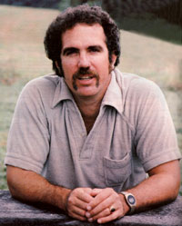
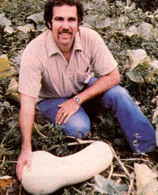

Kent Whealy
The Seed Savers Exchange
As we head into a new year, gardeners all across North America are beginning to dream of the coming spring. And many of them will celebrate the first months of 1982 by poring over newly arrived seed catalogs, in a delightful agony of indecision over which vegetables to order. Well, imagine finding out-as you leaf through your catalogs this winter in search of that succulent tomato you enjoyed last season or those hardy carrots that kept on producing until well after the first frost-that your pet varieties have been discontinued and replaced by unfamiliar "specialty hybrids". Or 'suppose an elderly neighbor has, for years, shared a prized watermelon with you . . . but now that he or she has died, you can't find seed for the antique melon anywhere.
Well, you may be surprised to learn that those imaginary incidents are representative of events that are beginning to affect gardeners everywhere . . . and to alarm scientists in many countries. In short, we're in the midst of a worldwide crisis-which few people even know about-that could actually threaten the survivalof many of our food crop species!
Dr. Erna Bennett, of the Crop Ecology Branchof the United Nations Food and Agriculture Organization, states, "Genetic wipeout . . . might well be tomorrow's greatest single problem, the problemof feeding the human species in the midstof the technological wealth it has created. " The fact is that an increasing number of vegetable varieties are disappearing from the plant kingdom. Literally hundreds of cultivars become extinct every year, either because aging gardeners have no one to pass their heirloom seeds on to when they die, or because the varieties are dropped by seed companies for economic reasons.
But what's an individual to do, you may well ask. Is it time to throw up our hands, pack away the gardening tools, and stock more long-term storage foods in the cellar? Well, the future doesn't have to be quite that bleak. All over the world-and especially in the United States and Canada-concerned gardeners are taking action by seeking out antique or "endangered" speciesof plants, and trading the seeds with other growers so that those varieties can be kept alive. At the focal point of much of this energy is Kent Whealy, a dedicated young man of 35 who expects to spend the rest of his life involved in the effort to protect what remains of our already depleted vegetable gene bank.
Kent founded the Seed Savers Exchange in 1975, hoping to establish an informal group ofbackyard gardeners who would subscribe to an annual yearbook (edited by Whealy) and participate in an exchange of seeds. The group's several hundred members share a kind of folksy friendship with one another. . . and with Kent, who prints excerpts from their letters along with the listings of rare or long-lost vegetables that they wish to find or have to offer.
But just how does such an organization work? How successful has it been in salvaging endangered species and in making people aware of the dangerous trend of our narrowing genetic diversity? And most important, what else can be done-in the wakeof recent plant-patenting legislation-to prevent the situation from slipping further out of control?
To find the answers to those questions, MOTHER sent staffers Larry Hollar and Jeanne Malmgren to the Midwest . . . where they bounced over several miles ofnarrow dirt roads on the way to spending two days with Whealy at his hand-built home in the rolling hills of northwestern Missouri. The following edited transcript of their conversations will be of interest to novice gardeners and expert seed-savers alike. In fact, Kent's remarks contain a warning-and a hint of hope-that should be heeded by anyone who expects to grow someof his or her own food this year.
PLOWBOY: Kent, you're at the forefront of a rapidly growing "underground" movement which will undoubtedly come into the mainstream as more and more people realize the hazards presented by our diminishing genetic resources . . . and come to understand the need to preserve what agricultural variety we have left. Has your training and background helped you to cope with the demands of your important position?
WHEALY: Ever since I was a small child, I've really loved gardening, and my involvement with seed saving just grew naturally from that, I suppose. As far as the organization of the Seed Savers Exchange goes, I think my university education prepared me well for the task. I have a degree from the William Allen White School of Journalism at the University of Kansas, so-when the opportunity to start this whole program presented itself-I was able to draw upon my training in writing, and my understanding of media techniques, to reach people and "sell" them on my concept.
PLOWBOY: But how were you originally sold on the idea of seed saving?
WHEALY: Back in 1973 my wife and I were living way up in the northeastern corner of Iowa and cultivating our first garden together. At that time Diane's grandfather-who was teaching us some "old country" horticultural techniques-gave me three varieties of seeds that his family had brought with them from Bavaria five generations before. When he didn't make it through that winter, I realized what precious heirlooms I'd been entrusted with . . . and I felt it was up to me to carry on his tradition by keeping his vegetable varieties alive.
About the same time, I happened to read articles by several scientists, including Dr. Jack Harlan and Dr. Garrison Wilkes, warning about the increasing loss of genetic diversity . . . or "genetic wipe-out", as some called it. One of the most convincing articles I encountered was an interview with Dr. Paul Ehrlich, in MOTHER NO. 28, in which he explained how risky it was for us to be moving toward monoculture plantings and limiting the available varieties of each of our vegetables . . . especially since we seem to be entering a period of rapid climate change, and since vegetable-damaging insects are continually developing resistance to pesticides.
I began to wonder just how many other gardeners were-like me-keeping rare or antique seeds . . . and I could see how important such a hobby could be in combating the situation Ehrlich described. So I wrote a few letters to various gardening and back-to-the-land magazines-one of my notes appeared in MOTHER NO. 34-to try to locate other seed-savers. During that first year, 1974, I heard from five or six people who had family heirloom seeds. One of my early correspondents-an elderly woman in Missouri named Lina Sisco-had an old-time legume she called the Bird Egg Bean, which was brought to the plains by her grandmother in the 1880's. Well, Lina died the next spring . . . but by then three of us were already growing her special vegetable. That made me recognize the great potential value of a "formal" exchange organization.
Once the "germ" of the Seed Savers Exchange had sprouted, more members joined our charter group. In 1975 we mailed out our first yearbook . . . which was actually a six-page photocopied listing of all the varieties our members had to offer or were searching for, along with excerpts from their letters to me. The exchange grew steadily over the next few years . . . by 1978 we had 238 members and our mimeographed publication was beginning to look like a book! New people constantly come in while others leave, so I'm not sure how many members there have been altogether . . . but this year the network has more than 300 seed-savers all across the United States and Canada, as well as in a dozen foreign countries.
many of the corporations that have bought out seed suppliers also manufacture pesticides and fertilizers ... and a company that's selling those products isn't likely to put very much effort or money into developing disease- or pestresistant crops!
You know, it's hard to believe the amount of impact that such a scattered group can have . . . but here are some figures that can give you an idea of what we've accomplished. During the past six years, our people have offered probably 2,000 heirloom or unusual vegetable varieties to 15,000 interested gardeners. Judging by those figures, I would guess-estimating conservatively-that some 150,000plantings have been made of vegetable varieties that aren't available through any seed catalog and that were, in many cases, on the edge of extinction. In fact, people have written me to express gratitude for helping them find rare varieties they'd been trying to locate for up to 40 years!
PLOWBOY: You mentioned concern over the loss of genetic diversity as one of your motivations for starting the Seed Savers Exchange. Let's talk about that. Botanists tell us that very few vegetable cultivars are actually native to the North American continent, so how did this part of the world build up the great variety of seeds that it is now in danger of losing?
WHEALY: As you know, we're largely a land of immigrants . . . and because of that unique history, we've been blessed with the biggest and most varied collection of food crops ever bestowed on any one region. Coming from literally every corner of the world, gardeners brought with them the best of their vegetable varieties, and then acclimated them to the growing conditions found in their new homes.
That's how our botanical diversity really began to develop, and-for a long time-it was augmented by government breeding experiments in the state agricultural stations. In combination, those factors created the most fantastic array of vegetable crops that any continent has ever known . . . and that's why it's so sad that-primarily as a result of today's adverse economic conditions-many of those varieties are deliberately being allowed to die out!
PLOWBOY: It's a frightening trend. Just how is such a thing happening?
WHEALY: Each year, hundreds of vegetables are dropped from seed catalogs . . . not because they're obsolete or hard to grow, but because they may not be as profitable as are the company's more popular varieties. Most seed houses these days simply can't afford to offer any vegetable that sells fewer than 500 packets a year, so the "small-time" cultivars are simply discontinued.
You'd be amazed at the number of vegetable varieties that were available at the turn of this century. I've seen lists in which the names of beans alone covered six standard-sized sheets of paper with singlespaced typing . . . peas required four similar pages . . . and onions took up two and a half! It's estimated that less than 20% of those 1900-vintage vegetables have survived to make it into today's seed catalogs. And whenever a variety is dropped from commercial availability-unless an individual or seed bank decides to make a concerted effort to keep that one alive-it is on the road to extinction!
PLOWBOY: Quite a few seed companies have-of late-been purchased by multinational corporations. How does that trend affect the size of our overall seed stock?
WHEALY: The recent, and ongoing, consolidation of the seed industry is a major problem. In many instances large agrichemical concerns are buying out small family-owned seed companies . . . and the diversified conglomerates consider seeds as just one more moneymaking division. Once a multinational takes over a seed house, it usually drops the locally adapted varieties in the inventory and replaces them with all-purpose hybrid vegetables or the new patented varieties. Now those particular cultivars will have a wider appeal (or so it's believed), because they're adapted to a number of different growing conditions and can be sold all across the country. You can see the impact of such developments most clearly in some of the big wholesale catalogs, whose inventories are now often 95% hybrids and 5% patented varieties. And with that sort of thing happening at the top of the seed supply pyramid, you can see why smaller retail mail order houses-those that haven't been bought out, that is-find it difficult to offer anything to their customers but hybrids and patented seeds.
PLOWBOY: Let me play devil's advocate here. Aren't most of the discontinued varieties really inferior? The newer cultivars, after all, are the result of intense research and experimentation . . . and you yourself said that they're adapted to many different climatic conditions.
WHEALY: Many of the vegetables that were dropped during the first half of this century were replaced by superior varieties, but that hasn't generally been the case for at least the last 20 years. Of course, the seed companies lead us to believe that their new hybrids are superior, that they're more vigorous and more highly productive than the "old standbys" . . . when in most cases the "improved" seeds are simply more highly profitable to market. After all, if I buy a pack of standard tomato seeds, I can save my own seeds from then on . . . and never have to order that particular vegetable from the supplier again. But if I want to keep planting a hybrid vegetable, I must go back to the company every spring for more seeds. So, as more and more of the hybrids push out the standard varieties, my choices become more and more limited . . . and I become more dependent on the seed companies!
Then, too, many of the corporations that have bought out seed suppliers also manufacture pesticides and fertilizers . . . and a company that's selling those products isn't likely to put very much effort or money into developing disease- or pest-resistant crops! So although a good many of the newer hybrid vegetables may be adapted to general conditions, most of them also need regular doses of pesticides and fertilizers to live up to the high-yield standards for which they were bred.
Furthermore, studies have shown that hybrid vegetables aren't always superior to the older standard varieties. For example, Dr. Ernest Kerr, of the Simcoe Research Station in Ontario, has performed thousands of such tests. He's found that while hybrid corns are markedly more productive than are the standard varieties, that is not the case with such crops as tomatoes and peppers. In fact, Dr. Kerr is quoted as saying that the best of the standard tomatoes have never even been equaled by any of the hybrids.
A lot of the older varieties that we're losing are also far superior to the hybrids in a particular locale. Far from being obsolete or inferior, each one is truly the cream of the crop . . . the result of millions of years of natural selection, thousands of years of human preference, and usually about a decade of in tensive breeding and testing. In many cases a particular type of vegetable has been grown in the same area by a family for over 150 years and-as a result-is extremely well adapted to local climatic conditions, and quite resistant to the specific diseases and pests that occur in that geographical region.
PLOWBOY: Late in 1980, Congress passed an amendment to the Plant Variety Protection Act of 1970. Along with other concerned gardeners and botanists, you campaigned vigorously against the amendment, warning that similar laws in England have created an all but intolerable situation there. What exactly happened in Britain that many people fear will be repeated here?
WHEALY: Let me go back a few years: I started keeping an eye on that situation when the "Plant Breeders' Rights" legislation-as it's called in the United Kingdom-was passed in 1974. The British government implemented the new law a step at a time, and the action culminated-in 1980-in the wholesale outlawing of about 2,000 vegetable varieties! That drastic action was taken because it had been found to be almost impossible to handle court cases based on the original patenting law . . . that is, to prove that someone had pirated a particular type of tomato, for example, and was growing and selling it. So the English government simply decided to outlaw all the older varieties, and catalog the new legal ones. It happened so quickly that many gardeners didn't know where to turn. Varieties they'd been growing all their lives suddenly weren't for legal sale anymore, and a person could be fined up to $800 for raising "contraband" vegetables! These laws are now being enforced in all Common Market countries.
Dr. Lawrence Hills, of Britain's Henry Doubleday Research Association, spearheaded the drive against the legal action. Six years after the legislation was passed, he finally succeeded in getting a grant of £300,000 to build a seed storage bank . . . but, by that time, many of the old varieties had already been lost. It was really a tragic situation.
Now during the six-month debate that preceded the passing of the plant patenting amendment in this country, American gardeners became concerned that a similar scenario might develop here. Well, the act passed last year-reportedly on a voice vote in the lame duck session of the Senate, when very few members were present-and many people calmed down, since it began to seem unlikely that a system of legal and illegal varieties of food crops would be established here as it was in England. But the same thing is, in effect, happening here, and that's the danger. It's just occurring very gradually . . . so slowly, in fact, that many gardeners don't realize there's a problem until they open a seed catalog and see that their favorite tomato or squash is no longer for sale.
PLOWBOY: But does the loss of, to use your example, one type of tomato really make much difference as long as more than one variety of each vegetable is available? In other words, just how dangerous is this situation?
WHEALY: I think it has reached the crisis point! As I discovered in the course of my early research, we're entering a period of rapid and drastic climate change that's placing unusual stresses on food crops. Furthermore, the heavy applications of pesticides so common to modern agribusiness are disrupting the natural predator-prey relationships among insects by causing many pests to develop tolerances to the very chemicals that are recommended for use with the new hybrid vegetables.
The loss of genetic diversity is also critical because any vegetable variety is susceptible to attack, at some point in the future, from a disease or pest that we may not even know about yet. You see, we have no idea what genes plant breeders will need to call on, say, ten-or a hundred-years from now. So the real strength of any food crop lies in diversity . . . that is, the availability of a set of genes for diverse characteristics that will allow plant researchers to selectively breed cultivars that can resist a particular disease or pest.
However, if we eliminate many of a variety's original characteristics by allowing those "peculiar" types to die out, scientists won't have a diversified gene pool to work with . . . and we could conceivably lose a threatened crop altogether. Consider green beans, for example: There's a single gene in beans that determines stringlessness, and I'd say that well over 99% of the snap beans grown in this country today are stringless. Now imagine what would happen if one disease zeroed in on that particular gene. People would be scrambling frantically to find a bean without the stringless gene . . . one of the old string varieties. And it's likely that only seed preservation programs like ours would still have those rare cultivars.
PLOWBOY: The worth of the Seed Savers Exchange seems pretty obvious . . . but what can your program do for the individual gardener? As long as a person's favorite varieties are still offered in a seed catalog, why should he or she take the trouble to save and exchange seed?
WHEALY: The ability to save seed is probably one of the most valuable tools for self-sufficiency that I know of. In fact, it's a logical next step for anyone who's honed his or her gardening skills to a high degree . . . and another way that people can "unplug" themselves from our economic system. As I've said, in many cases gardeners don't know their favorite vegetables won't be available anymore until they receive their seed catalogs and can't find a particular variety for sale. But folks who save their own garden seed can avoid such disappointments.
People need to understand that it's not at all difficult to harvest and store seed. Lots of the supply houses would have you think that homesaved seed is inferior or unreliable, but that simply isn't true. In each of the SSE yearbooks, I print an article on the techniques of saving seeds . . . including instructions for storing them-by drying and freezing-to maintain their vitality.
PLOWBOY: Isn't it also true that some gardeners simply enjoy raising rare, antique crops?
WHEALY: I think most people would like to grow vegetables that represent pieces of our past. There can be great satisfaction in doing so . . . especially when you know who grew a particular vegetable in years gone by, and what it may have meant to them. I mean, anyone can plant Top Crop beans year after year, but it's a rare privilege to be able to raise Lina Sisco's Bird Egg bean.
On the other hand, I know that a lot of people are put off by the term "heirloom". They think it implies something exotic that's hard to grow . . . but, in most cases, antique varieties are no more difficult to care for than are the standard supermarket-type vegetables. Heirlooms are simply good, nonhybrid vegetable varieties that have been passed down and improved through generations. You know, much of the experimental breeding that's going on now is done with only business interests in mind, with the goal-for instance-of producing tough, thick-skinned vegetables that can withstand machine harvesting and cross-country shipping. Home gardeners, obviously, have to "ship" most of their produce only from the back yard to the kitchen . . . so they don't have any need for those particular super-hybrid varieties. And this is where my exchange can help the average gardener. Our type of preservation program-in which hundreds of private horticulturists are finding old varieties and exchanging seeds for thousands of vegetables that aren't otherwise available-is doing at least as much good, I think, as are any of the commercial breeding programs.
PLOWBOY: Let's talk about the mechanics of your organization. How does a person become a member and begin exchanging seeds with fellow gardeners?
WHEALY: Every winter our yearbook is mailed out to all members . . . and to anyone else who's purchased a year's subscription. Printed in that annual are the listings of all the seeds that people have to offer and of any varieties that folks are looking for. Just purchasing the yearbook doesn't automatically make someone a member, however. Membership is granted only to those who offer seeds for distribution through the publication . . . once a person does that, he or she can obtain other seeds simply by writing to the person who has the variety in question and enclosing proper postage. Nonmembers (that is, people who buy the yearbook but haven't yet offered any seeds) can still order from our members, but must include postage and a dollar for each type requested.
Members receive the winter yearbook-which is mailed out late each February-and a copy of the Fall Harvest edition, which appears later in the year and includes a plant finder service to aid people who are seeking specific vegetables. We also help gardeners exchange bulbs and cuttings, but that service is of little use to our foreign members . . . since such vegetable material isn't allowed to cross national borders.
PLOWBOY: Is there any way that someone might be able to be actively involved in the exchange if he or she doesn't have any seeds to offer?
The ability to save seed is probably one of the most valuable tools for self-sufficiency that I know of. In fact, it's a logical next step for anyone who's honed his or her gardening skills to a high degree . . . and another way that people can "unplug" themselves from our economic system.
WHEALY: Such folks can, as I said, order seeds from our members (although we ask that they do so sparingly, in order not to deplete our overall seed stock), grow out the vegetable, and then join the exchange the next year by offering the same seed themselves.
I'm developing a Growers' Network, which-I hope-will allow people to participate simply by helping to multiply the stocks of rare seed. Anyone in that group would agree to raise a certain number of specific varieties from seed which I'd provide, return part of the stock to me, and share the remaining seed through the exchange. With such an arrangement, we'll not only add new members to our group, but also be able to help maintain the collections of some elderly gardeners who n eed assistance in keeping their vegetable varieties alive. This year, that scheme will be aided by the Soil and Health Foundation of Emmaus, Pennsylvania. Two hundred members of the foundation's gardening branch-called the Backyard Researchers-will join an equal number of gardeners from my Growers' Network to participate in the project this season.
PLOWBOY: How do you focus the massed efforts of the Growers' Network?
WHEALY: Most of the varieties that I'm attempting to save through that particular group aren't the commercial cultivars that have been dropped. Rather, I hope the Growers' Network will be able to multiply rare heirlooms that are often being kept alive by individual elderly gardeners. In many cases, older folks have collections that are so big they can't handle them anymore. One of the most dedicated and well-known seedsavers is John Withee, who-until he stepped down last year-was the director of Wanigan Associates, a network of gardeners who worked at multiplying John's vast stock of heirloom beans.
Recently, John sent me samples of 1,185 varieties which made up the Wanigan Associates collection. I plan to divide those beans between two of my collectors, Russell Crow and Ralph Stevenson. Each of those men already grows about 500 bean varieties . . . and their gardens are, as you might imagine, tremendous! If and when we can split John's seeds between them, we hope to reach the point where they have twin collections, and each will then be able to grow out a different half of it each season. That way, we'd actually be multiplying the entire stock every year!
Burt Berrier, who died three or four years ago, was another master bean collector . . . leaving more than 450 varieties that he'd amassed over a 50-year period. His beans were first taken over by the National Seed Storage Laboratory, but it couldn't store such small-by the lab's standards-quantities, so it passed the seeds on to John Withee. Well, of Burt's original varieties, several hundred died out while the collection was in the process of changing hands several times . . . and John found that he was already growing all but about 100 of the survivors. As you can imagine, I'm really anxious to turn Burt and John's beans over to Russell and Ralph soon, because the Wanigan varieties weren't distributed to gardeners at all last year. And if we don't grow them out this spring, we may be able to pick up only pieces of the original collection.
PLOWBOY: Can you explain to me how the National Seed Storage Laboratory operates . . . and how your work differs from that facility's?
WHEALY: The National Seed Storage Lab is a federal repository located in Fort Collins, Colorado where the seeds of tens of thousands of our food crops are stored for posterity. It's a good concept . . . but, unfortunately that seed bank is terribly underfunded and understaffed, so it can't always do an adequate job. Then, too, the government seed bank isn't open to the public, so gardeners can't obtain seeds from it as they can by joining our exchange. Furthermore, the NSSL's collections are, for the most part, varieties that are ancestors of today's large-scale agricultural crops-since its main function is to store seed that has resulted from the breeding done at the state experimental stations-and it's sometimes criticized for the redundancy of its collections.
Finally, the federal seed lab doesn't systematically seek out heirloom varieties. It picked up Burt's collection, for example, only at his specific request . . . and then had to transfer it to John Withee upon discovering how small the individual samples were. Nor does it have the resources to make a point of saving varieties that are likely to be dropped by commercial sources. That's why I think an amateur network such as the SSE is so necessary . . . and why it can be especially effective when it operates as a supplement to the official government program.
PLOWBOY: Are there other private seed collections that you're interested in acquiring or would like to investigate?
WHEALY: Well, there's an old fellow named Ben Quisenberry who's been selling tomato seeds from his home in Ohio for some 40 years now. Ben shut down his business in 1980-at the age of 93!-because he had to go into the hospital for a while. When he came home, he was able to salvage only nine of his 30 tomato varieties . . . but, through listings in the SSE yearbook, we've been able to locate all the others except one, a Florida cultivar called "Indian River".
Ted Telsch in Texas is another man with an extensive tomato collection . . . he grows 150 varieties gathered from all over the world. I've also been working with Gary Nabhan, an ethnobotanist in Arizona who travels through the desert regions of Mexico and the southwestern U.S., searching for seeds of traditional native American foods.
PLOWBOY: You've said that your quest for rare seeds often takes you among such groups as various Indian tribes, Mennonites and Amish, and Cajuns. Why do those particular peoples often have access to rare seeds?
WHEALY: It seems to me that such men and women, who are-for the most part-living traditional lifestyles and who honor the ways of their ancestors, are more likely to save seeds than are most folks. I've also found that whenever I visit very isolated rural areas-especially those in rough, hilly country-I'm likely to find a gold mine of heirloom vegetable crops.
PLOWBOY: But isn't it sometimes difficult to penetrate a tightly knit, clannish community and convince the people to part with some of their cherished heirloom seeds?
WHEALY: Occasionally, yes. Many native Americans, for example, are reluctant to share their seeds . . . unless they're really afraid a particular variety might be lost. They feel-and rightly so-that seed is a sacred gift from the Mother Earth . . . but I believe that one of our most important tasks as stewards of the earth is saving seed. Of course, several Indians are members of the exchange . . . including Carl Barnes in Oklahoma, who hand-pollinates 50 different varieties of corn every year. And two Cherokees recently sent me seed of corn and beans that their grandparents carried over the Trail of Tears in the 1830's.
A few Amish and other Mennonite people are also participating in the exchange . . . and I feel really encouraged that traditionally private people and ethnic groups have enough trust in the organization to be willing to join. At the same time, though, I know that an overuse of the exchange system by other individuals may very well drive away some of these more cautious members.
PLOWBOY: What do you mean by overuse of the system?
WHEALY: Well, I guess it's quite normal for an avid gardener to see our yearbook as the ultimate seed catalog, because it probably contains the largest collection of unusual vegetable varieties to be found anywhere. But many people, unfortunately, just want to grow heirloom crops out of curiosity or as novelties to show off to their friends . . . and don't take seriously the responsibility of saving seed. Such abuse, of course, is a drain on the exchange system-which depends on a constant flow of seeds among the members-and can really hurt the organization in the long run. Too many people, I think, just get the catalog and go nuts . . . ordering all the varieties they'd like to grow before they've become proficient seed-savers themselves. That's the kind of overuse I'd like to prevent.
I've often considered limiting access to the members' listings . . . and allowing nonmembers to participate in the exchange only through the Growers' Network. But I'm afraid that doing so would discourage too many people from joining at all . . . and that just doesn't seem the way it ought to be. At the same time, of course, I want to protect my members as much as I possibly can . . . so I've been thinking of establishing a cut-off-in June or July-for all requests, in order to reduce the total number of seeds that are distributed each year.
PLOWBOY: There's evidence around your house of several related projects. Can you tell us about them?
WHEALY: Right now I'm using an Apple II microcomputer to assemble an inventory of all the vegetable varieties that are still commercially available. I've already compiled a directory of nearly every seed company in the United States and Canada . . . and I'm about one-quarter through an inventory of all the varieties they carry. The catalog-which I hope to update each year-will be by vegetable variety name and will include a complete description of each variety, plus a list of all its known sources.
This inventory-once it's completed-will show clearly the varieties that are "endangered". . . which, by my private definition, means that they're offered by fewer than, say, three companies. I think it'll prove to be an invaluable resource for anyone who's interested in preserving disappearing vegetables. Many gardeners make a habit of trying to buy up seed for their favorite crops if they think the cultivars are about to be dropped, but sometimes such individuals find out too late that a particular variety is doomed . . . and then they don't know where to turn. My inventory covers about 150 seed suppliers in North America, so it will provide complete alternative access to those scarce varieties . . . as well as an "early warning system" to help people buy stocks of seed while it's still available.
I've been working on a new indexing system for the yearbook, too. All the earlier editions of the publication have had the members' names organized according to state, which forced the person to read through the whole book to locate the sources of a particular vegetable. I hope the next yearbook will look a little different. I'm going to index it by vegetable variety . . . with each category containing the names of members who are offering and seeking that specific kind of seed, so those people will be able to find each other immediately. I'd also like to construct some kind of "future" source directory, which would catalog people who may be keeping rare varieties but don't yet have enough seed to share.
Finally, I plan to list all period gardens in the country that are maintained by living history clubs, outdoor museums, botanical gardens, or state horticultural societies. I've already been contacted by the directors of many such projects, because they often find it difficult to locate authentic seed for the historical plots. Through a period garden directory, we could help keep such groups supplied with varieties of the correct time period or ethnic origin . . . and they, in turn, could grow out the vegetables and send seed back to the exchange, for our members.
PLOWBOY: Where do you expect the SSE to go from here?
WHEALY: Well, if we just continue what we're doing now-and do it well- I'll be satisfied. I'd like the Seed Savers Exchange to remain a clearinghouse for access rather than a warehouse for seed, because I can't, myself, undertake the expensive task of storing seed. It's my aim to provide a means of allowing people to exchange the varieties they're saving on their own. I see us as a pilot project that might lead to a larger network of seed exchanges, storage banks, and growers' networks. The real value of the SSE, therefore, isn't only in the access to rare vegetables that we make possible for hundreds of gardeners, but also in our demonstration of a functional structure that others may want to emulate when setting up similar projects.
Ideally, of course, I'd like to expand the scope of the exchange until we can locate all heirloom vegetables that are still being handed down among families . . . keep alive those varieties that are being dropped from seed catalogs . . . and search out any that have already been discontinued but are still "hoarded" by individual gardeners.
PLOWBOY: What is your most urgent need if you're to guarantee the continued growth of the Seed Savers Exchange . . . hard, cold cash or the active participation of members?
WHEALY: As is the case with most other non-profit preservation projects, we've had a hard time getting funds. Recently, since the SSE has become tax exempt, we have received help from several sources . . . including 60 people who had enough trust in our work to purchase $100 lifetime subscriptions! That sort of financial assistance has allowed me to work full time on the exchange this year, which will obviously make a big difference in how the organization develops from here. But it's going to be a long struggle, so we're always seeking new sources of funding.
The best way for folks to help us, though, would be by becoming small-scale plant explorers within their own areas. Such localized botanists could be invaluable . . . since they'd be able to build up small collections of particular vegetables native to their various regions. We also need more young people in the SSE. A lot of older gardeners are keeping and growing varieties that they've bred up through a lifetime . . . but as a result of today's mobile society, there are often no family members still living in the same area to inherit those specialties. Therefore, younger gardeners who've put in enough hours in a vegetable plot to know what they're doing can perform quite an important service by multiplying these older folks' crops and then offering the seed to others through the exchange.
I've found that most of the SSE members fall into one of two age groups: They're either in their 20's and 30's-and part of the new back-to-the-land movement that MOTHER represents-or they're in their 70's and 80's . . . and hark back to North America's original homesteading tradition! That age gap can be bridged by young people who are willing to accept the skills and seeds that are available to be passed on. A number of my members, in fact, have suggested that we establish some sort of apprenticeship program in special techniques of gardening and saving seed . . . and I think that's an excellent idea.
PLOWBOY: This all seems like an enormous amount of work for one man. What sort of inspiration helps keep you going?
WHEALY: Our group is really lucky, I think, to have the chance to do something that will affect future generations in such a positive way. As I've already emphasized, the stockpile of genetic wealth is dwindling rapidly . . . and our descendants will have to work with whatever we manage to save of those horticultural resources.
You know, there's sort of a tidal wave of greed sweeping this society, but we can't let it chip away at our agricultural inheritance. We are the stewards of this sacred wealth and it's up to us to preserve and pass it on . . . and that's why I'm willing to dedicate my life to saving as much as is possible of our vanishing vegetable heritage.
EDITOR'S NOTE: A yearly subscription to the Seed Savers Exchange-which includes a copy of the Winter Yearbook and the Fall Harvest Edition-costs $6.00 (write to Kent Whealy, Director, Dept. TMEN, RR 2, Princeton, Missouri 64673). The 1982 edition of the SSE yearbook should reach subscribers about March 1. Kent wishes to remind all interested gardeners, however, that he serves only as a clearinghouse for access to rare vegetables . . . so no seeds are available directly from him.
|
 |
 |
|